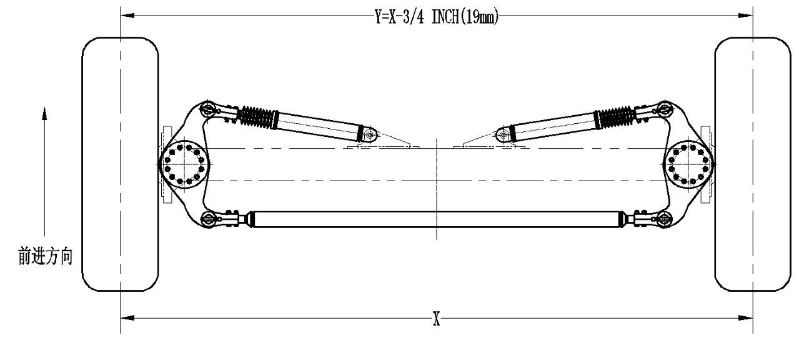
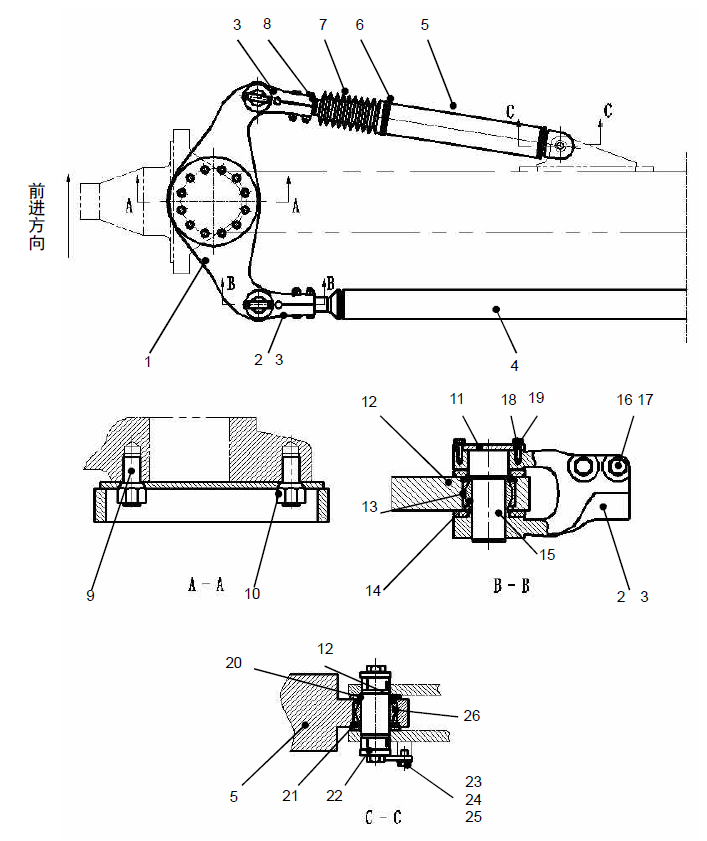

转向机构. · STEERING ASSY
Рулевой механизм
Описание
Если не указано иное, номера позиций в скобках совпадают с номерами позиций на рис. 2.
Рулевой механизм включает в себя следующие компоненты:
1. Рулевой цилиндр: гидравлический цилиндр двойного действия, конец цилиндра рулевого цилиндра закреплен на фиксированном опорном ушке переднего моста, а конец стержня поршневого штока закреплен на рулевом рычаге.
2. Поперечный рычаг тяги: поперечный рычаг с регулировкой длины соединяет два рулевого рычага.
Управление
Функция рулевого механизма состоит в том, чтобы управлять рулевым управлением всего транспортного средства, контролируя движение узла поворотного кулака передней оси. Максимальный ход и минимальный ход рулевого цилиндра регулируют максимальный угол поворота транспортного средства.
Когда рулевое колесо вращается, один из цилиндров рулевого управления выдвигается, другой рулевой цилиндр сокращается. Это относительное движение состоит в том, что два поворотного кулака поворачиваются на своих соответствующих шпильках, тем самым заставляя шину вращаться, а рулевые рычаги тяги связываются с движением узла двух поворотного кулака и может осуществить регулировку схождения переднего колеса.
Уход и техническое обслуживание
Периодическое техническое обслуживание должно включать следующие виды работ:
1. Проверить все детали на наличие износа или повреждений, отремонтировать или замените их в соответствии с соответствующими требованиями. Не использовать неисправные детали.
2. Убедиться, что все детали нормально смазаны, и все уплотнения находятся в хорошем состоянии.
3. Проверить схождение переднего колеса и отрегулировать следующим образом (рис. 1).
Рис.1 Регулирование схождения переднего колеса
Регулировка схождения переднего колеса:
Схождение переднего колеса автомобиля следует проверять часто. Правильное схождение улучшает срок службы шины и улучшает рулевое управление автомобиля. Шаги регулировки следующие:
Примечание: при регулировке схождения переднего колеса убедиться, что транспортное средство находится в незагруженном состоянии и припаркован на ровной поверхности. Место парковки должно позволить транспортному средству перемещать вперед, как минимум, длина двух автомобиля, а шины должны быть как можно возвращены ровно.
1. Убедиться, что подшипники передних колес правильно отрегулированы.
2. Убедиться, что передние/задние подвесные цилиндры находятся на надлежащей высоте без нагрузки.
3. Отрегулировать начальную длину поперечного рычага до 188 дюймов (4775mm).
4. Отрегулировать вилы на конце рычага рулевого цилиндра так, чтобы открытые резьбы на конце рычага были как можно меньше.
5. Остановить автомобиль на ровной поверхности и верните передние колеса. Транспортное средство должно быть закреплено, за исключением использования методы с помощью системы фрикционного тормоза.
Примечание. убедиться, что перед автомобилем достаточно расстояния (по крайней мере, один поворот шины), все измерения должны быть согласованными, и последнее движение транспортного средства должно быть в направлении вперед.
6. Переключить кнопки на следующее положение каждой шины.
a. Задняя часть шины;
b. Центр протектора;
c. Кнопки на двух шинах в вертикальном направлении, должны быть как можно дальше от земли, с одинаковой высотой, чтобы измерить расстояния между кнопками и землей с помощью рулетки или другого подходящего инструмента.
Примечание: кнопки должны быть как можно ближе к центральной оси ступицы в вертикальном направлении.
7. Записать расстояние между шагами кнопок X и землей.
8. Запустить транспортное средство в обычном режиме и продвигайтесь прямолинейно вперед до тех пор, пока кнопка не повернется к передней части шины, а высота в вертикальном направлении будет соответствовать данным, записанным на шаге 7. Также окончательное направление транспортного средства должно быть направлено вперед.
9. Закрепить все транспортное средство на ровной поверхности, передние колеса должны быть обращены к передней части. Транспортное средство должно быть закреплено, за исключением использования методы с помощью системы фрикционного тормоза.
10. Записать шаги Y кнопок.
11. Определить правильное значение регулировки схождения переднего колеса следующим образом.
Y=X-3/4 дюймов (19mm)
12. По требованиям отрегулировать поперечный рычаг тяги, чтобы получить требуемые размеры.
Примечание: из-за геометрии рулевого управления величина регулировки составляет приблизительно 1/2 от вычисленного значения.
13. После завершения регулировки верните автомобиль в исходное положение и повторите проверку. Повторите измерение и регулировку в соответствии с этим методом до тех пор, пока не будет получено правильное значение.
14. Затянуть болты на рулевом цилиндре и поперечном рычаге тяги до указанного момента затяжки.
15. Запустить автомобиль и поверните колесо в обоих направлениях в крайнее положение, чтобы убедиться, что рулевой цилиндр и поперечный рычаг тяги достигают конца хода. По мере необходимости повторите регулировку.
Демонтаж (см. рис. 2)
Рулевой механизм можно разобрать следующим образом:
1. Остановить карьерный самосвал в безопасном месте, кроме использования фрикционной системы торможения, еще нужно подложить клинья под колеса.
2. Если необходимо снять рулевой цилиндр, следуйте инструкциям в гидравлической системе.
3. Снять рулевой поперечный рычаг тяги (4) следующим образом:
a. Снять болт и шайбы закалки (19);
b. Снять нажимную плату(11);
c. Перед разборкой поперечного рычага тяги (4) сначала зафиксируйте его, снимите штифт (15);
d. Снять поперечный рычаг тяги(4).
4. Снять рулевой рычаг (1) следующим образом:
a. Снять рулевой цилиндр (5) и вилку (2 и 3) в соответствии с методом, описанным в соответствующем материале о гидравлической системе;
b. Снять поперечный рычаг тяги и вилки (2 и 3) в соответствии с шагом 3.
c. Снять конусообразную гайку (10) неподвижного узла кулака;
d. Снять рулевой рыча(1). Отметить направление рулевого рычага для последующей повторной сборки.
Проверка и ремонт
Детали рулевого механизма можно отремонтировать следующим образом:
1. О методе проверки и технического обслуживания рулевого цилиндра см. соответствующее содержание о гидравлической системе.
2. Проверить подшипники на наличие износа или повреждений. Если необходимо их заменить, выполните следующие действия:
a. Снять зажимное кольцо и шариковый подшипник;
b. Установить новые шариковый подшипник и зажимное кольцо.
3. Проверить болт рулевого управления на наличие износа или повреждения. Если есть, замените его следующим образом:
a. Снять болт, метод нагрева помогает удалить предыдущее вяжущее вещество;
b. Нанести слоем Loctite 242 (или аналогичный продукт) на поверхность нового болта, который будет установлен;
c. Установить болты, чтобы убедиться, что резьба 2 ± 1/16 дюймов (51±1,7mm) находится вне узла рулевого механизма;
d. Можно высохнуть вяжущее вещество во время процесса установки
4. Проверить другие детали на наличие износа или повреждений.
Установка
Компоненты рулевого механизма можно установить следующим образом.
1. Установка рулевого рычага (1):
a. Выбрать рулевой рычаг, соответствующий передней оси сборки, обратите внимание, чтобы различить левый и правый рычаги рулевого управления;
b. Убедиться, что посадочная поверхность кулака и рулевого рычага (1) чистые и не содержат смазки и других загрязнений;
c. Установить рулевой механизм (1);
d. Закрепите рулевой рычаг (1) конической гайкой (10) и затяните гайки с указанным моментом.
2. Об установке рулевого цилиндра (5), см. описание о гидравлической системе. Обратите внимание, что небольшое количество резьбы на конце стержня рулевого цилиндра остается внутри.
3. Установка поперечного рычага (4):
a. Развернуть вилку (2&3) с монтажным отверстием рулевого рычага (1), обратив внимание на большее отверстие на верхней стороне;
b. Установить штифт (15) и установите нажимную плату (11), болт (18) и шайбу закалки (19) последовательно;
c. Установить уплотнение (12) на верхнюю и нижнюю стороны шарикового подшипника (14), установив штифт (15);
d. Отрегулировать схождение передние колёса в соответствии с соответствующим содержанием о техническом обслуживании и уходе, затяните болты и гайки цилиндра рулевого управления (5) и соединительного рычага тяги (4) в соответствии с указанным крутящим моментом.
Спецификация
1
Рулевая сошка
8
Зажим
15
Штифт
22
Узел штифта
2
Вилка (по левому направлению повернуть)
9
Болт
16
Болт
23
Прижимная пластина
3
Вилка (по правому направлению повернуть)
10
Коническая гайка
17
Гайка
24
Прокладка
4
Поперечный рычаг тяги
11
Прижимная пластина
18
Болт
25
Болт
5
Гидроцилиндр поворота
12
Уплотнение
19
Шайба
26
Шаровой подшипник
6
Зажим
13
Упорное кольцо
20
Втулка
7
Пылезащитная втулка
14
Шаровой подшипник
21
Упорное кольцо
Рис. 2. Механизм рулевого управления в сборе
Ходовая система - рулевой механизм
070-0030
Ходовая система - рулевой механизм
070-0030
2
3
Ходовая система - рулевой механизм
070-0030
1
Ходовая система - рулевой механизм
070-0030
Ходовая система - рулевой механизм
070-0030
Дополнения - Масса компонентов
200-0090
4
5
Дополнения - Масса компонентов
200-0090
Направление вперед
Направление вперед
Иллюстрации

